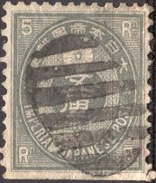
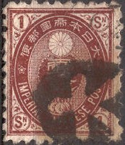
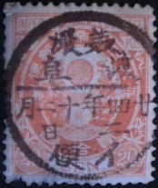
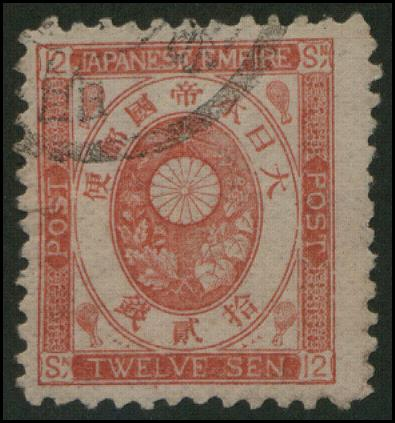
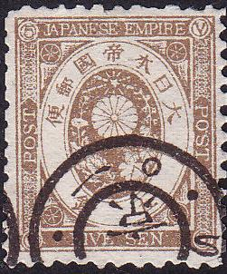
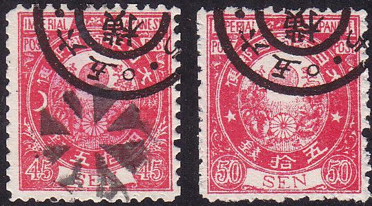
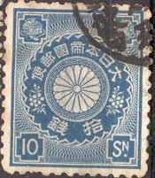

Return To Catalogue - Japan 1871-1875 - Japan 1900-1920
Note: on my website many of the
pictures can not be seen! They are of course present in the
catalogue;
contact me if you want to purchase it.





Is this a telegraph cancel?
5 r grey 1 s black 1 s brown 1 s green 2 s brown 2 s violet 2 s red 3 s orange 3 s lilac 4 s green 4 s brown 5 s brown 5 s blue 6 s orange 8 s brown 8 s violet 10 s blue 10 s brown 12 s red 15 s green 15 s violet 20 s blue 20 s red 25 s green 30 s lilac 45 s red


50 s red 50 s brown 1 Y red (center embossed)
Forgeries exist, some tips on how to recognize the easier ones can be found at http://www.isjp.org/Expert/Koban/koban.html. On many forgeries the cancels are 'printed' and also the 'San-ko' sign often appears somewhere in the design.

Forgeries of the 12 s

Forgery of the 45 s value, with the words 'San-ko' added in the
design, between the sun and the chrysantheum; next to the plants
at each side.


Besides the leaves above the word "JAPANESE" the words
'San-ko' are added to the design in this forgery of the 1 s, 2 s
and 3 s. In the 2 s it appears as almost two white patches
besides those leaves. Also note that the cancel 'stops' before
the end of the stamp in the 3 s.

Almost identical forgeries as the 2 s shown above, with the
cancel in exactly the same location. Yet, I can't see the
'San-ko' signs.

Forgery of the 3 s orange.

Some other forgeries of the 5 s, 10 s and 20 s values. The 5 s
value has the word 'San-ko' in the design in the ellipse next to
the 'OS' of 'POST' at both sides. The cancel on the 10 s is
printed and appears in the same position in many of these
forgeries.

The 5 s forgery as shown above, with identical cancel, but
without the words 'San-ko'.

In the white ellipse to extra characters 'San-ko' are added at
the level of the "OS" of "POST" at both sides
in this forgery of the 8 s.

This forgery also has the words 'San-ko', are added at the level
of the "OS" of "POST" at both sides. But the
forger added a fancy cancel to cover these signs up.

Forgery of the 50 s with the words 'San-ko' written at both sides
of the word "SEN" (almost invisible).

Forgeries of the 1 s with printed cancel (the cancel is slightly
misaligned and leaves some white spots in the design)


Forgery of the 8 s value with very badly done lettering, for
example the "S" of "JAPANESE"

Forgery of the 15 s value.

Forgeries of the 45 s and 50 s.

Another rather primitive forgery of the 4 s green value.
I've seen some forgeries with cancels "NAGASAKI" and "JOKOHAMA" (both in western script in a single circle and with no date), possibly made by the forger Spiro:


Forgeries with the bogus cancel "NAGASAKI", reduced
size. I've seen sheets of 5x5 stamps with "NAGASAKI"
and "JOKOHAMA" cancels on the same sheet. They were
most likely made by Spiro.

A dealer label of "W.STANEK PRAGUE" in a similar
design.
Imperforate 'postal stationary', most likely a cut from a
souvenir card.
2 s red 5 s blue

2 s red (Arizugawa) 2 s red (Kitasirakawa) 5 s blue (Arizugawa) 5 s blue (Kitasirakawa)




5 r grey 1/2 s grey (1901) 1 s brown 1 1/2 s blue (1900) 1 1/2 s lilac (1906) 2 s green 3 s brown 3 s red (1906) 4 s red 5 s yellow 6 s lilac (1906) 8 s olive 10 s blue 15 s lilac 20 s orange 25 s green 50 s brown 1 Y red
On the 1 Y, the flower in the center is embossed. These stamps were used overprinted in japanese caracters in China and Korea.
In 1912 a military stamp was issued, the 3 s red, overprinted with two Japanese characters:
Postal stationary in the same design:
{kind=link}
{kind=link}
{kind=link}